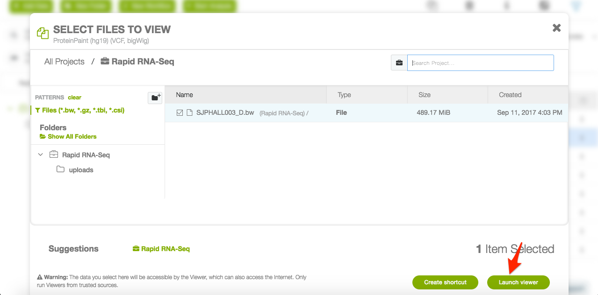

ProteinPaint BigWig Viewer¶
The ProteinPaint interactive coverage viewer is used to visualize any bigWig files information. You can follow these steps to get an understand of how it works.
Open up the custom viewer file output by your pipeline. The name of this file will vary, so consult the specific pipeline guide to know where to find it.
Click “Launch” in the bottom right corner to launch the custom viewer.
Once the page has loaded, you will be able to see the bigWig viewer. You can navigate around the genome by gene or genomic location. Alongside the coverage track is the GENCODE gene reference.